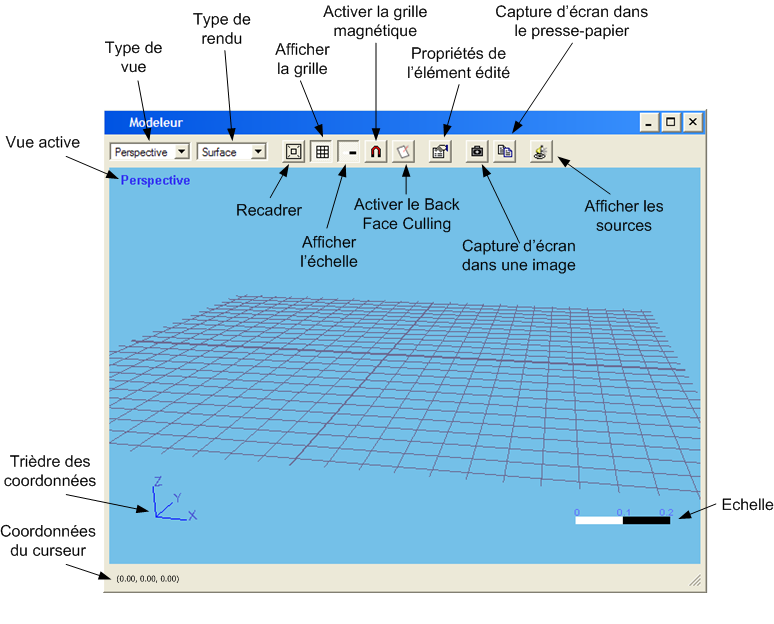
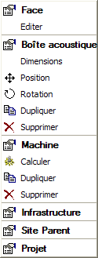

Table des matières
Modeleurs 3D
Les différents modeleurs comportent
des comportements communs. Ces modeleurs sont :
La barre
d'outils Modeleur est commune à tous les types de modeleurs.
De plus, lorsque une fenêtre
de type modeleur est la fenêtre active de l'espace
de travail, certaines fontionnalités deviennent actives dans les
menu Fichier et Edition,
et sur la barre d'outils associée :
- Sauvegarde en bibliothèque
de l'élément édité (Ctr+S)
- Export
en XML de l'élément édité (Ctrl+E)
- Impression de la vue du modeleur
(Ctrl+P)
- Export en VRML de la scène
3D
- Annuler la dernière action
(Ctrl+Z)
- Rétablir la dernière
action annulée (Ctrl+Y)
Fenêtre modeleur
Certaines fonctionnalités
sont directement accessibles depuis la barre d'outils associée à
la fenêtre du modeleur :

- Type de vue : les 4 vues
possibles sont : dessus, gauche, face et perspective
- Type de rendu : il est
possible d'afficher la scène 3D en fils de fer ou en remplissant les
faces (Surface), le rendu peut-être lissé ou non (Flat ou Gouraud)
- Recadrer : repositionne
la caméra courante afin de visualiser tous les éléments
présents dans la scène 3D
- Afficher la grille : affiche
ou masque la grille, ses dimensions peuvent être modifiés à
partir de la boîte de dialogue des préférences
- Afficher l'échelle
: affiche ou maque l'élément graphique représentant l'échelle
(en bas à droite) de la vue courante en fontion du niveau de zoom
- Activer la grille magnétique
: la grille magnétique est utilisée pour le placement des éléments
dans la scène, ses caractéristiques peuvent être modifiées
à partir de la boîte de dialogue des préférences
- Activer le Back Face Culling
: le "Back Face Culling" est une technique 3D qui permet de masquer
les faces qui sont dirigées vers la caméra, cela permet par
exemple de visualiser l'intérieur d'un bâtiment pour positionner
les machines
- Propriétés de
l'élément édité : affiche la boîte de
dialogue permettant d'éditer les propriétés de l'élément
édité
- Capture d'écran dans
une image : une image représentant la scène courante du
modeleur est enregistrée, différents formats d'images sont disponibles
- Capture d'écran dans
le presse-papier : place une image représentant la scène
courante du modeleur dans le presse-papier, il est ensuite possible de la
coller directement dans une application tierce comme un tableur, un traitement
de texte ou encore un logiciel de traitement d'image. Cette action est aussi
possible en tapant : Ctrl+C
- Afficher les sources :
affiche ou maque les sources ponctuelles composant les machines ou les bâtiments
Menu contextuel
La quasi totalité des actions
possibles sur les éléments de la scène se fait par le menu
contextuel. Celui-ci s'affiche lors d'un clic droit sur un élément
de la scène 3D.

Ce menu est construit de façon
à représenter l'arborescence à partir de l'élément
réellement cliqué. Celui-ci est placé tout en haut du menu.
L'élément suivant est son parent et ainsi de suite (par exemple
le parent de la boîte est la machine, celui de la machine est l'infrastructure,
etc.).
Pour chaque élément
correspond un regroupement d'actions pouvant contenir une ou plusieurs des actions
suivantes en fonction du modeleur et de l'élément :
- "Type de l'élément"
: le type de l'élément en gras permet d'affiche la boîte
de dialogue associée à l'élément
- Dimensions : pour modifier
les dimensions de l'éléments (par exemple hauteur d'un cylindre)
- Position : pour placer
un élément à un endroit précis, connaissant ses
coordonnées par rapport à son parent
- Rotation : pour orienter
un élément précisement, d'un angle connu par rapport
à son rapport
- Dupliquer : effectue une
copie conforme de l'élément et l'ajoute au parent de l'élément
copié
- Supprimer : supprime l'élément
correspondant
- Calculer : effectue le
calcul acoustique pour l'élément correspondant (par exemple
le calcul de la répartition des sources pour une machine)
- Editer : ce choix affiche
le modeleur de Face, il permet, pour les faces
des machines d'ajouter une bouche de ventilation ou une cheminée, et
pour les faces des constructions une fenêtre
Il est à noter que chacune
de ses actions peut être annulée (Ctr+Z) ou rétablie (Ctr+Y).
Raccouris clavier
Certains raccourcis
clavier permettent d'intéragir avec le modeleur :
| Touche |
Action |
| 1 |
Vue de dessus (2D) |
| 2 |
Vue de gauche (2D) |
| 3 |
Vue de face (2D) |
| 4 |
Vue en perspective (3D) |
| V |
Change la vue courante |
| C |
Active le mode caméra |
| I |
Affiche ou masque le nombre
d'images affichées par seconde (fps) |
| F ou F5 |
Recadre la vue courante (Fit) |
| Shift |
Active le mode caméra
de façon temporaire avec certains outils |
| Ctrl |
Désactive la grille
magnétique de façon temporaire |
| Ctrl+C |
Effectuer une capture d'écran
dans le presse-papier |
| Ctrl+E |
Exporter l'élément
édité en XML |
| Ctrl+P |
Imprimer la vue courante |
| Ctrl+S |
Sauvegarder l'élément
édité |
| Ctrl+Z |
Annuler la dernière
action |
| Ctrl+Y |
Rétablir la dernière
action annulée |